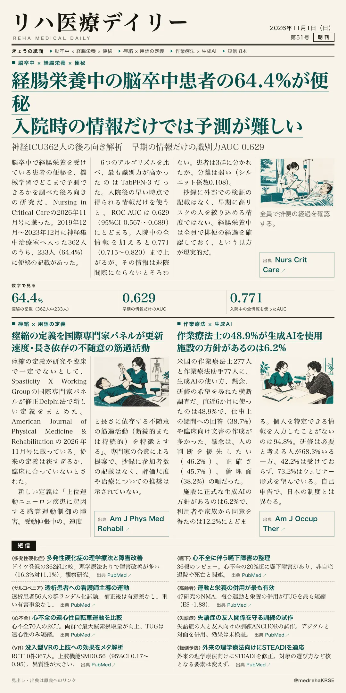
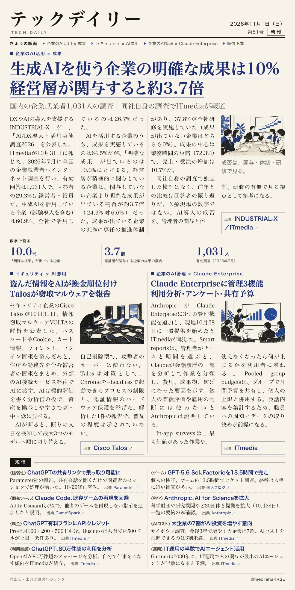

リハ医療デイリー
経腸栄養中の脳卒中患者の64.4%が便秘 入院時の情報だけでは予測が難しい
神経ICU362人の後ろ向き解析 早期の情報だけの識別力AUC 0.629
6つの機械学習を比べ、使える情報の時点で精度が変わった。

テックデイリー
生成AIを使う企業の明確な成果は10% 経営層が関与すると約3.7倍
国内の企業就業者1,031人の調査 同社自身の調査でITmediaが報道
成果を分けたのはツールでなく経営の関与・体制・研修だった。

神経ICU362人の後ろ向き解析 早期の情報だけの識別力AUC 0.629
6つの機械学習を比べ、使える情報の時点で精度が変わった。

国内の企業就業者1,031人の調査 同社自身の調査でITmediaが報道
成果を分けたのはツールでなく経営の関与・体制・研修だった。
